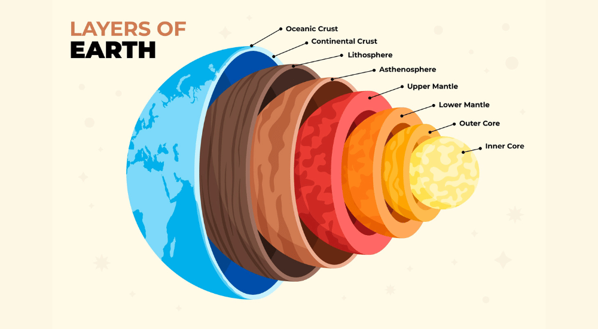

Earth is the third planet from the Sun and the only astronomical object known to harbor life. Earth is the third planet from the Sun and the only astronomical object known to harbor life. This is made possible by Earth being an ocean world, the only one in the Solar System sustaining liquid surface water. Almost all of Earth's water is contained in its ocean, which covers 70.8% of Earth's crust. The remaining 29.2% of Earth's crust is dry land, which is predominantly located within Earth's land hemisphere in the form of continental landmasses. Most of Earth's land is at least somewhat humid and covered by vegetation, while large ice sheets at Earth's polar deserts retain more water than Earth's groundwater, lakes, rivers, and atmospheric water combined. Earth's crust consists of slowly moving tectonic plates, which interact to produce mountain ranges, volcanoes, and earthquakes. Earth has a liquid outer core that generates a magnetosphere capable of deflecting most of the destructive solar winds and cosmic radiation. Earth has a dynamic atmosphere, which sustains Earth's surface conditions and protects it from most meteoroids and ultraviolet light at entry. It is composed primarily of nitrogen and oxygen. Water vapor is widely present in the atmosphere, forming clouds that cover most of the planet. The water vapor acts as a greenhouse gas and, together with other greenhouse gases in the atmosphere, particularly carbon dioxide (CO2), creates the conditions for both liquid surface water and water vapor to persist via the capturing of energy from the Sun's light. This process maintains the current average surface temperature of 14.76 °C (58.57 °F), at which water is liquid under normal atmospheric pressure. Differences in the amount of captured energy between geographic regions (as with the equatorial region receiving more sunlight than the polar regions) drive atmospheric and ocean currents, producing a global climate system with different climate regions, and a range of weather phenomena such as precipitation, allowing components such as carbon and nitrogen to cycle.

Earth, our home, is the third planet from the sun. It's the only planet known to have an atmosphere containing free oxygen, oceans of water on its surface and, of course, life. Earth is the fifth largest of the planets in the solar system. Characteristics of the Earth. Our planet Earth is a rotating sphere that orbits the Sun. The Earth's axis of rotation is at a constant tilt with respect to its orbit around the Sun, resulting in the change of seasons. The physical characteristics of the Earth include its size and composition. Earth is the only planet in our solar system that has a large amount of liquid water. About 74% of the surface of Earth is covered by liquid or frozen water. Because of this, people sometimes call it "blue planet". Because of its water, Earth is home to millions of species of plants and animals.
Major Facts about Earth
Comparison of Earth with other planets in the Solar System
| Planet | Temperature | Diameter | Habitable |
|---|---|---|---|
| Mercury | -173 to 427 °C | 4,879 km | No |
| Venus | 462 °C | 12,104 km | No |
| Earth | -88 to 58 °C | 12,742 km | Yes |
| Mars | -125 to 20 °C | 6,779 km | No |
Earth is a unique and fascinating planet with many distinctive features that make it suitable for life. Its position in the solar system, atmosphere, and abundant water resources contribute to its ability to support a diverse range of ecosystems and climates.